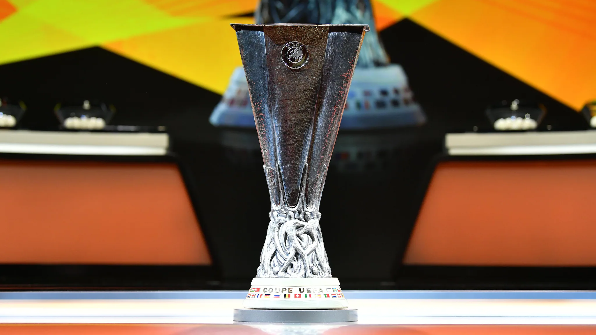

La Europa League es la competición de plata del fútbol internacional europeo por detrás de la Champions League. S e trata de la segunda de las tres grandes competiciones de clubes europeas organizadas por la UEFA.
En la temporada 2008/2009, la UEFA decidió cambiar el nombre de la competición de Copa de la UEFA a la actual UEFA Europa League.
El Sevilla es el rey de la Europa League, con 6 títulos en 6 finales disputadas. por detrás de los hispalenses están el Inter de Milán, la Juventus, el Liverpool y el Atlético de Madrid con 3 títulos.
